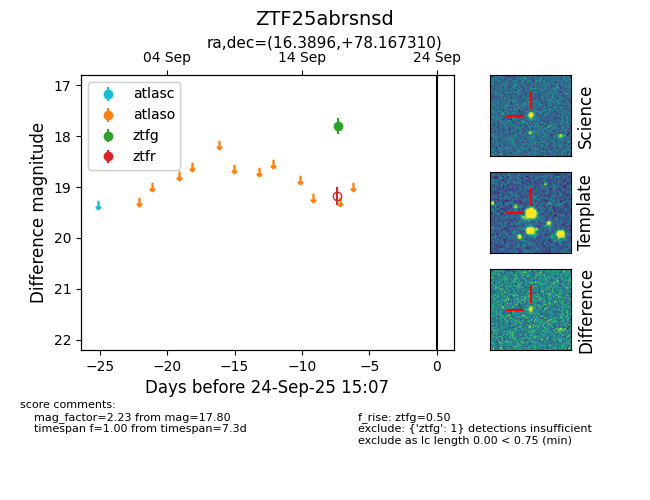

FINK: ZTF25abrsnsd
Lasair: ZTF25abrsnsd
ALeRCE: ZTF25abrsnsd
ZTF25abrsnsd (ztf,fink)
equatorial (ra, dec) = (16.3896,+78.16731)
galactic (l, b) = (123.6820,+15.31613)

last ztfg=17.80
1 ztfg detections